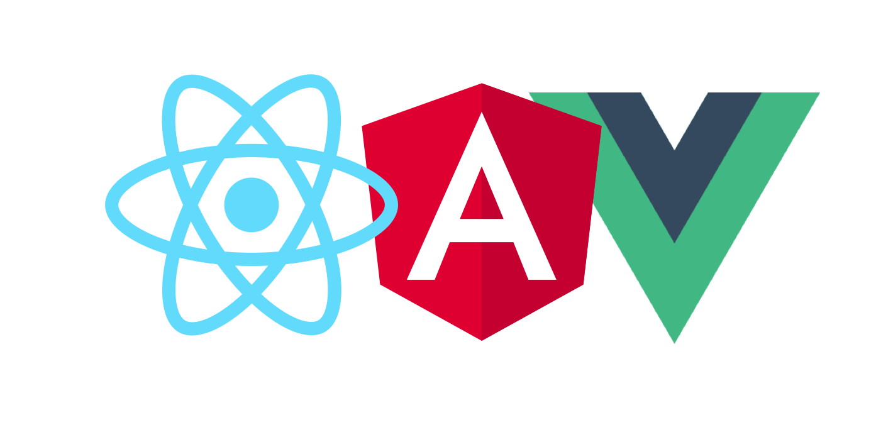
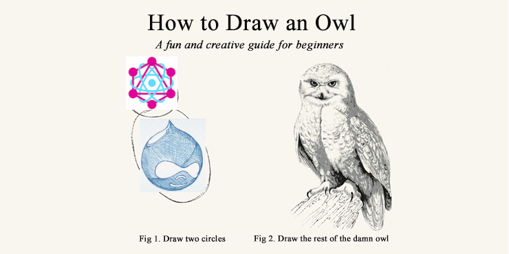
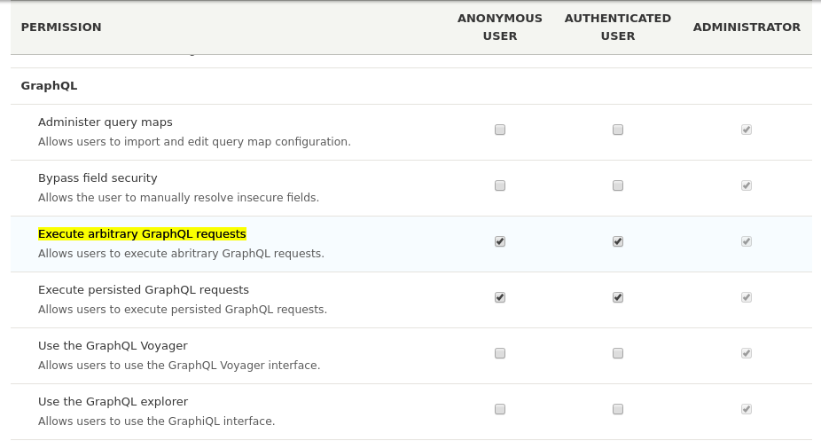

Creating web app with Drupal, GraphQL and React
Ivan Abramenko
Technocrat, Senior Developer
About me
DrupalBook.ru
https://www.youtube.com/c/IvanAbramenko
drupal.org/u/levmyshkin
GraphQL
GraphQL is a query language for your API


What is GraphQL?
Creating web app with GraphQL
GraphQL Client: Apollo or Relay?
Apollo client integrations:

Creating web app with GraphQL

Create "Hello, World!"
Drupal/GraphQL/React
Install GraphQL, GraphQL Core drupal modules
GraphQL Explorer and Voyager
Queries, Relations, Mutations
How to get information with GraphQL
Nodes, Entities, Relationships
Security:
1. CORS support: https://www.drupal.org/node/2715637
parameters:
cors.config:
enabled: true
# Specify allowed headers, like 'x-allowed-header'.
allowedHeaders: ['x-csrf-token','authorization','content-type','accept','origin','x-requested-with', 'access-control-allow-origin']
# Specify allowed request methods, specify ['*'] to allow all possible ones.
allowedMethods: ['GET', 'POST']
# Configure requests allowed from specific origins.
allowedOrigins: ['*']
# Sets the Access-Control-Expose-Headers header.
exposedHeaders: false
# Sets the Access-Control-Max-Age header.
maxAge: false
# Sets the Access-Control-Allow-Credentials header.
supportsCredentials: false
Security
2. User permissions:

Security
3. Graphql JWT (optional):
https://www.drupal.org/project/graphql_jwt
Create "Hello, World!"
Create React application
- npx create-react-app my-app
- npm install --save graphql apollo-boost react-apollo react-html-parser
GraphQL Examples
GraphQL: Select data
GraphQL: Pass variables to GraphQL
GraphQL: Views
GraphQL: Mutations
GraphQL: Fragments, filters, pagination, Subscriptions, Resolvers
Should I use GraphQL?
GraphQL Starter Kits:
- React Starter Kit - https://github.com/kriasoft/react-starter-kit
- React Fullstack GraphQL - https://github.com/graphql-boilerplates/react-fullstack-graphql
- ... another 9000 starter kits
- ... But your own or favorite Starter Kit is the best!
GraphQL Pros
- One endpoint /graphql.
- You can add fields in Drupal once and can use this fields everywhere in React.
- 3rd party library.
GraphQL Cons
- JSON API is easier, usual and clearer.
- It's hard to work with mutations.
What's next?
Git repositories:
https://github.com/levmyshkin/drupal-graphql-react - presentation
https://github.com/levmyshkin/drupal-graphql - Drupal (can be any drupal instance)
https://github.com/levmyshkin/graphql-react-quick-start - Hello World example
https://github.com/levmyshkin/react-graphql - More Examples
Questions?
Creating web app with Drupal, GraphQL and React
Ivan Abramenko
Technocrat, Senior Developer
DrupalBook.ru
levmyshkin89@gmail.com